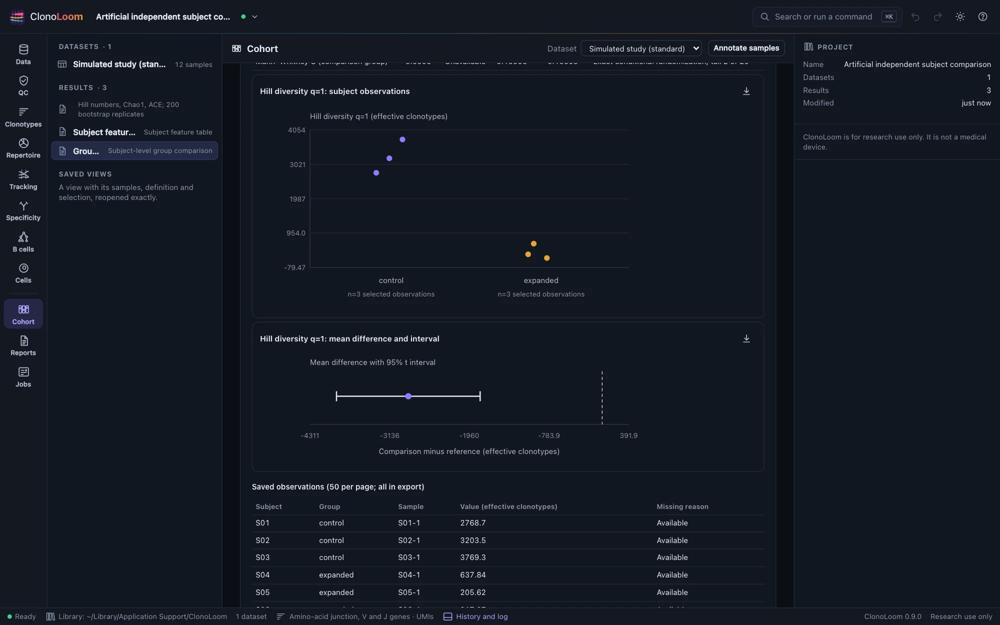
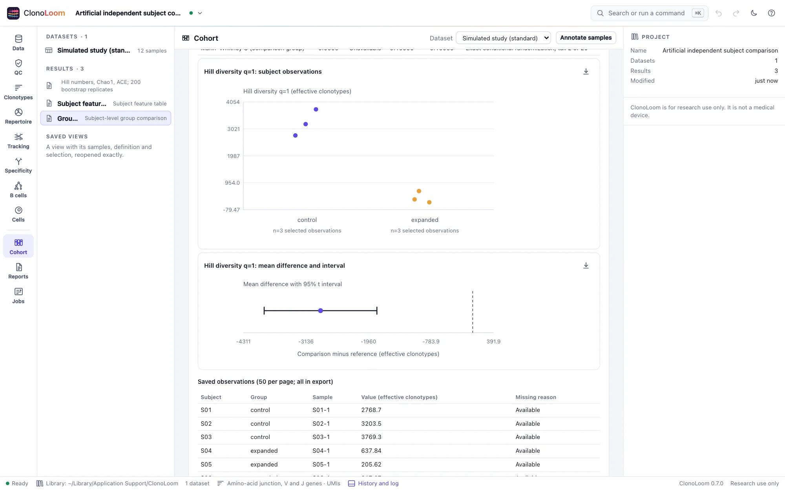
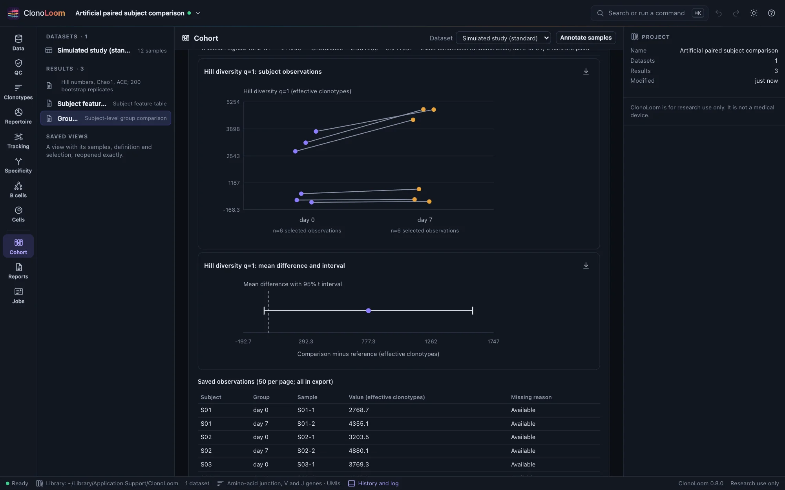
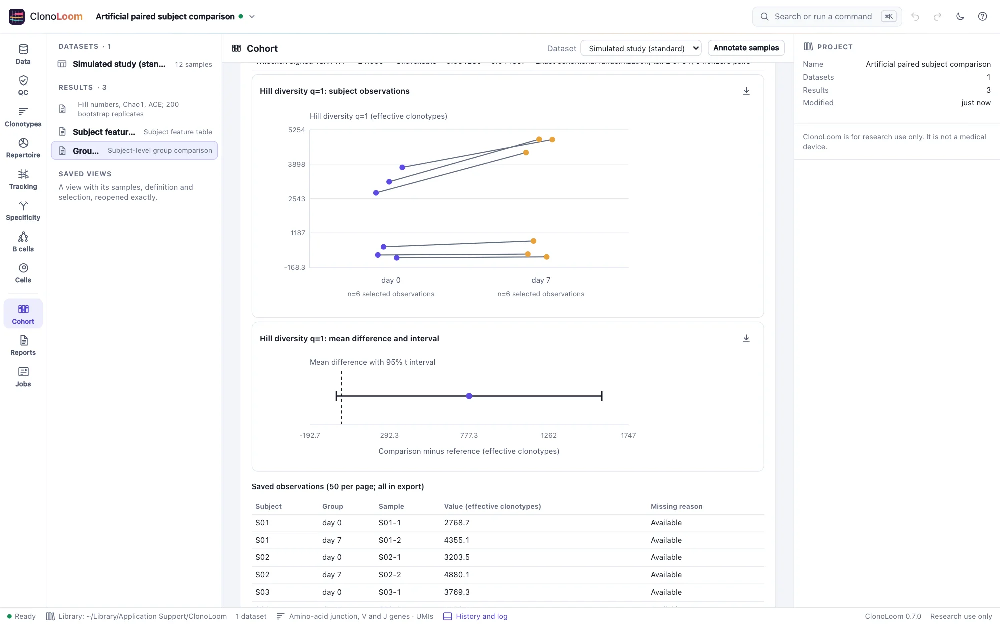

Subject group comparisons
A comparison uses the biological subjects in a saved design. It keeps the selected observations, tests a declared feature family and shows both effect size and uncertainty.
Compare a declared feature family
- Check and save an independent or paired study design, then build its subject feature table.
- In Cohort → Group comparisons, choose that saved feature table. Select the features before inspecting test results; this declares the correction family.
- Choose a confidence level, Monte Carlo draw count and seed, then select Compare selected features. Small rank-test null spaces are enumerated exactly regardless of the Monte Carlo setting.
Independent designs compare disjoint subjects. Paired designs compare two observations from each subject, aligned by subject identifier. Effects are always comparison minus reference. The saved design and feature measurements are rechecked; current annotations, definition and QC settings do not change an existing result.
Independent subjects
Each feature receives a two-sided Welch t test and a Mann–Whitney U test. Welch estimates the difference in population means with unequal variances. Its small-sample interpretation needs plausible normal observations. The rank test compares identical distributions under exchangeable group labels; it does not test only median equality.


Within-subject comparisons
Paired designs receive a two-sided paired t test and Wilcoxon signed-rank test. The mean effect uses each subject's difference. Paired t requires plausible normal differences; signed ranks require differences symmetric about zero with exchangeable signs. Exact zero differences are omitted from signed ranks, with the remaining number reported. All-zero differences have rank p=1.


Hover over a point or paired link to inspect its identity. The complete observation table remains available below. Horizontal jitter separates points and has no quantitative meaning. Above 500 available observations, use the full table or export; the plot never silently subsamples.
Two effect measures, distinct intervals
- Mean difference uses the feature's original units and a t confidence interval. The plot includes a zero reference line. Zero or non-finite standard error leaves the test and interval unavailable, while a finite estimate remains.
- Probability of superiority estimates the chance that a randomly selected comparison subject exceeds an independent reference subject, giving ties half credit. In a paired design the corresponding probability is an increase within the same subject, giving zero differences half credit. Its conservative bounded-difference interval can span 0–1 at small sample sizes. It is a different estimand from a mean or median shift and is not an inversion of the rank test.
All intervals are marginal, not adjusted for multiplicity. Parent diversity bootstrap intervals describe within-sample measurement uncertainty and are not used as uncertainty among subjects. A nonsignificant result does not establish equivalence or no effect.
Missing values and the BH family
For K selected features, both tests enter one Benjamini–Hochberg family of exactly 2K slots. Both raw and adjusted p-values remain visible. An unavailable observation leaves that feature untested; no subject or pair is silently removed. Untestable slots contribute p=1 to the correction denominator but remain unavailable in the results.
BH control assumes independence or suitable positive dependence among null p-values; arbitrary dependence is not guaranteed. The family does not cover other results, contrasts or searching through features after viewing outcomes. No distribution pretest chooses the more favorable method.
Rank tests use observed midranks, including ties, and inclusive absolute-centered two-sided tails. For unbalanced tied data this can differ from twice the smaller one-sided tail. Null spaces up to 50,000 assignments are exact. Larger spaces use seeded Monte Carlo with (tail+1)/(draws+1), default 9,999 draws, and report the tail count. An excessive total work request fails explicitly; select fewer features or draws.
Interpret within the study design
Structural checks do not establish biological independence, adequate power or freedom from confounding. Subjects sharing cages or other clusters may need a different model. These two-group analyses do not adjust covariates or batch effects, transform measurements, remove outliers, pool libraries or standardize depth. Richness and diversity remain sensitive to sampling depth. Keep the design's selection reasons and warnings with any interpretation.
Save, reopen and export
Results are immutable, support project undo/redo and reopen from Results. Creation needs the saved feature artifact, but no raw sources or separate diversity artifact. Saved comparisons reopen and export even when parents are absent. Export comparison ZIP includes both tests and effects in comparisons.csv, the full subject-features.csv, complete JSON, manifest and provider NOTICE. Missing numeric CSV cells are blank with reason columns. Source terms remain attached.
Figure exports include units, pairing, sample counts, interval meaning, design warnings and provenance. Methods includes the saved comparison description and citations. Remote clients use compare_cohort with explicit feature-parent and feature IDs; see Remote control.
Sources and validation
Mean tests follow Welch (1947) and Student (1908); rank tests follow Mann and Whitney (1947) and Wilcoxon (1945). Multiplicity follows Benjamini and Hochberg (1995); Monte Carlo tails follow Phipson and Smyth (2010). Conservative probability bounds apply Hoeffding (1963) and McDiarmid (1989).
Independent SciPy references validate t inference and BH; independent exhaustive label/sign enumeration validates tied rank tails and Monte Carlo. Tests cover missingness, zero variance, exact null calibration, normal-model interval coverage, processor agreement, provenance and saved browser workflows. The exact estimands, derivations, choices and limits are recorded in the repository's research §5.32.